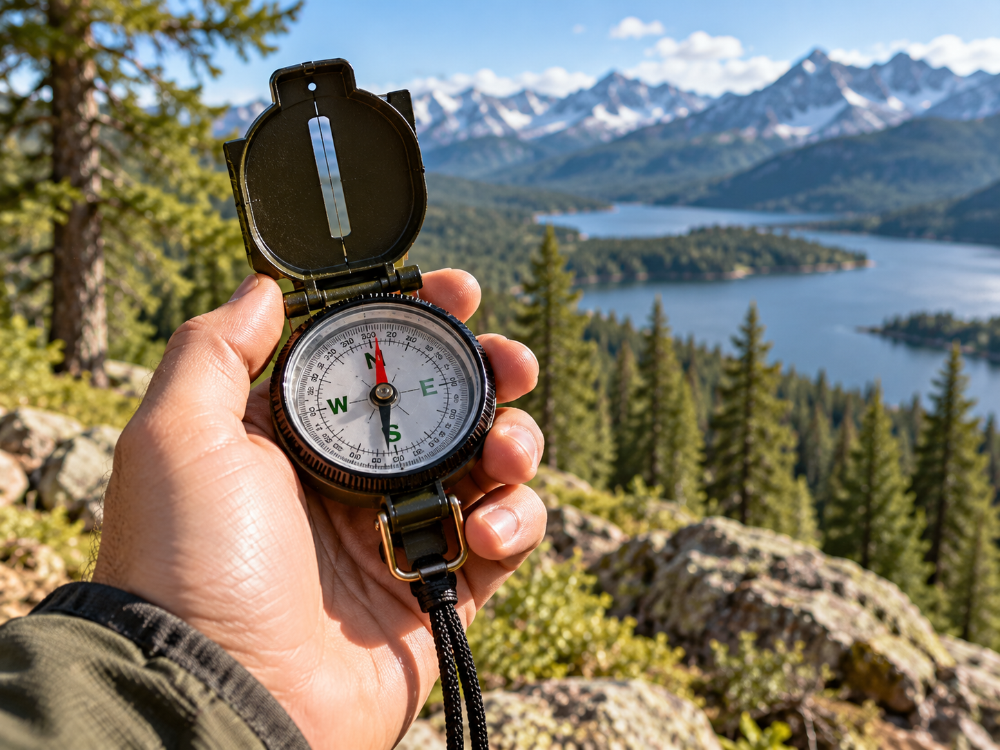

Compass

A compass is a navigation tool that helps identify direction.
What It Is
A basic magnetic compass has a needle that aligns with Earth's magnetic field. This helps the user identify magnetic north and other directions.
When to Use It
A compass can be useful while hiking, camping, or navigating an unfamiliar area, especially when used together with a map.
How It Works
The compass should be held flat and away from objects that may interfere with it. The needle helps identify direction, which can then be compared with a map or route.
Materials Needed
- Compass
- Map when available
- Knowledge of the planned route
Source
Navigation and outdoor safety information: National Park Service - Ten Essentials